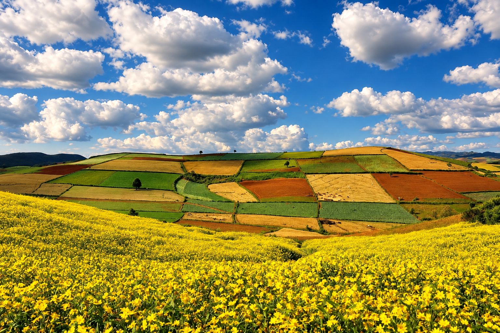

My Little Studio

My Little Studio
このギャラリーは、自然や旅、穏やかな日常の中で見つけた小さな瞬間を集めたものです。 森の光に包まれるような、やさしく落ち着いた雰囲気を表現しました。

2021年6月3日
Work Life


80
高い場所から見た、仕事をしていた頃の景色。忙しい毎日の中で、この景色を見ると少し気持ちが落ち着きました。今では懐かしい思い出のひとつです。
2025年3月25日
School Life

120
日本語学校が終わったあとの帰り道。自転車に荷物をのせて、いつもの道をゆっくり帰りました。何気ない時間だけど、学生生活らしい大切な一瞬です。
2025年4月5日
Season

40
日本で初めてゆっくり見た桜。青空の下に広がる淡いピンクがとてもきれいで、春が来たことを実感しました。忘れたくない季節の思い出です。
2025年7月20日
Nature

42
夏の青空の下に広がる緑の田んぼ。風が吹くたびに稲が揺れて、のどかで落ち着く景色でした。
2025年3月24日
Season

60
近所の小さな公園で見つけた白い花。春のやさしい光の中で咲いていて、少し立ち止まりたくなる景色でした。
2025年4月2日
Nature

56
桜が咲く季節に歩いた小さな川沿い。流れる水と春の景色がとても穏やかで、ゆっくりした時間を感じました。
2025年5月2日
Daily Life

66
お店で見つけた、花とガラス瓶のかわいいディスプレイ。落ち着いた色合いとやさしい雰囲気が気に入り、思わず写真に残しました。
2026年08月02日
Food

90
友だちと一緒にカフェで楽しんだデザート。プリンやパフェを味わいながら、ゆっくり話して過ごした心地よい時間です。
2025年09月24日
Food

130
友だちと一緒に食べたごはんの時間。たくさんの料理を囲みながら楽しく話し、何気ないけれど大切な思い出になりました。
2026年08月02日
Friends

87
友だちと一緒に見つけた、大阪らしいカラフルなマンホール。みんなで足元を囲んで撮った一枚で、その日の楽しい空気まで思い出せる写真です。
2026年3月28日
Food

65
京都で見つけた抹茶のデザート。やさしい甘さと落ち着いたお店の雰囲気が心地よく、歩き疲れたあとにほっとできる時間になりました。
2026年05月15日
Daily Life

128
神戸・北野を歩いていたときに撮った街の風景。青空と個性的な建物がとても印象的で、ゆっくり散歩しながら街の雰囲気を楽しみました。
Copyright©aye_pwint all rights reserved.